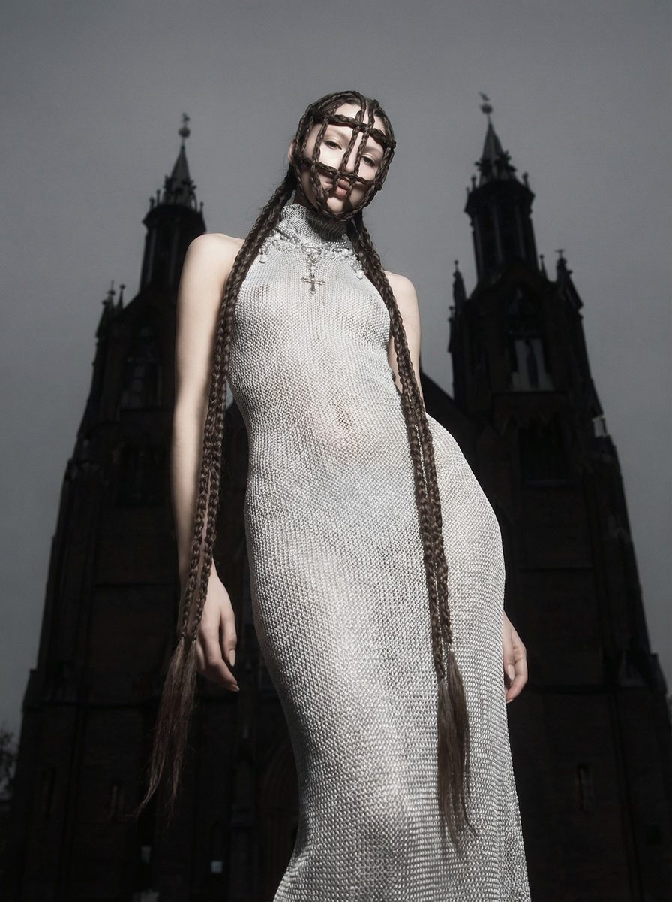

AI content creator / AI visual artist Романова Ольга
Создаю визуальный контент для брендов с помощью генеративного AI — от концепции до финального результата.

Создаю визуальный контент для брендов с помощью генеративного AI — от концепции до финального результата.


AI-генерация визуалов на основе ДНК бренда, мудбордов и референсов
Создание видеоконтента с помощью AI-инструментов для соц сетей и рекламы
Продуктовые визуалы премиум-качества для каталогов и рекламных кампаний
Полный визуальный ряд для рекламных кампаний бренда
Стилизованный контент для Instagram, Telegram и других платформ
AI-генерация моделей и образов для бренда
Изучение ЦА, текущих задач маркетинга, ДНК бренда
Поиск референсов, подготовка мудбордов, согласование идей
Переработка референсов под ДНК бренда, дополнение визуала деталями и хуками
Раскадровки, опорные кадры серии
Новые ракурсы и позы, кадры для визуального разнообразия и динамики
Отбор кадров для публикации, обработка в Photoshop, монтаж
Единство стиля, идеи и озвучки, подчеркивающее ДНК бренда


Бренд создаёт базовую одежду простого кроя, вдохновлять стритстайл эстетикой, smart casual и трендами. Минималистичность и чистота кроя делает вещи уместными в разных ситуациях и позволяет экспериментировать со стилизацией.


Выражение ДНК бренда через визуальные метафоры и стиль изображений. Задача — переосмыслить каталожную съёмку с помощью AI. Результат — цельная визуальная история, основанная на позиционировании бренда.

Концепция представляет собой гармоничное сочетание элементов классической и современной готики. Вдохновение черпается из природных явлений, эклектики ретрофутуризма, разных эпох, мрачной архитектуры, что отражается в текстурах и формах, создавая уникальные образы, подчеркивающие красоту человеческого тела.

Бренд вдохновлен эстетикой средневековья, отсюда готический собор и элементы рыцарских доспехов. Необычная прическа является визуальным хуком и метафорой шлема современной девушки.
Актуальность интерпретации выражается стилем фотографий, ракурсами и смелым кадрированием. Постановка света основана на эстетике 2000-х годов — актуального тренда и части ДНК бренда.


Фотосессия вдохновлена идеей "пути к себе" коллекции GO WILD и напоминает о нём. Генерация трактует концепцию через двойничество, сумерки, бунт, искусство, выбор своего комфорта.



AI фотосессия продукта, AI product ads, AI посты для соц сетей